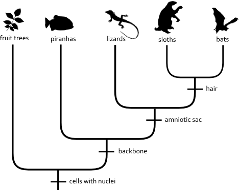
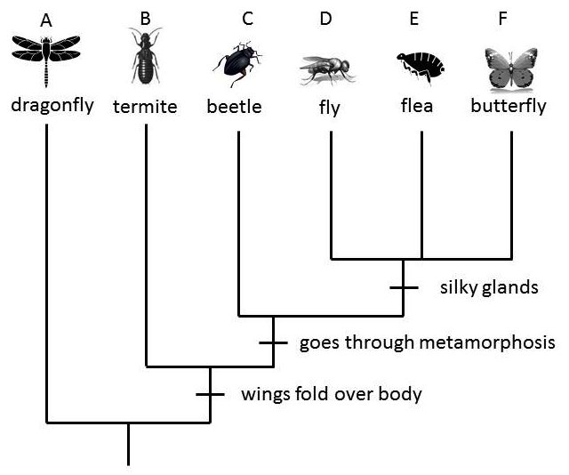
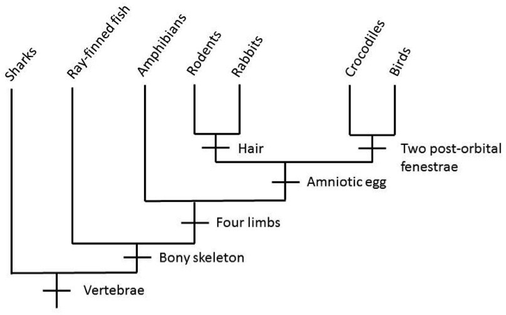
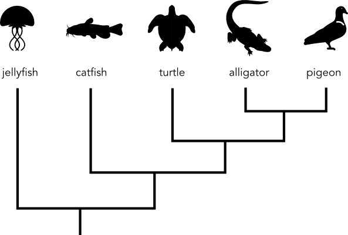
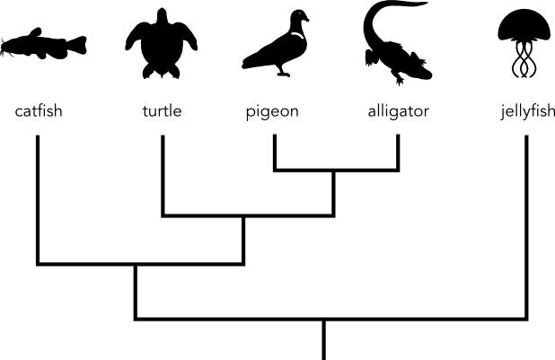
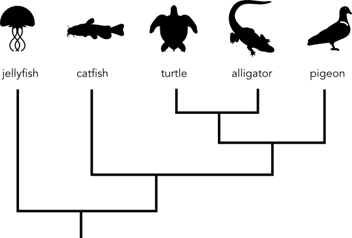
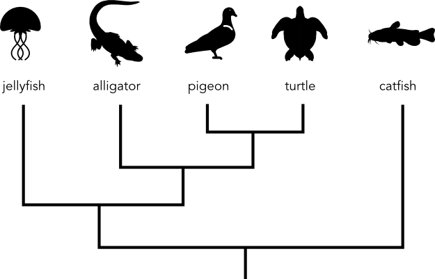
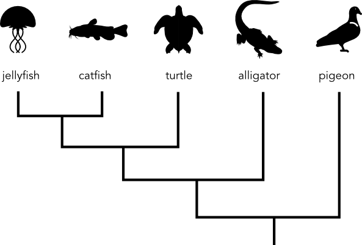
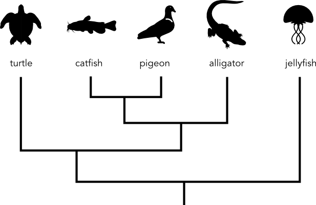
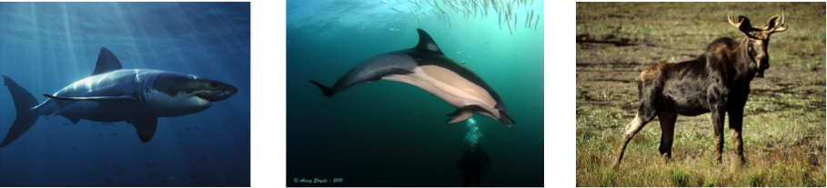

Page 1
Build-a-Tree 2
Life on Earth Project
Tree Thinking Skills Assessment v0.1


Participant Information
| (check all that apply) | ||
|
Native American Pacific Islander Asian American White (Caucasian) |
Mexican American or Chicano Puerto Rican Other Latin American Black or African American |
|
Build-a-Tree 2: Learning Objectives
- All living things on Earth are related.
- All living things on Earth, including humans, are related.
- All living things on Earth are related because they share ancestors in common.
- Some kinds of living things are more closely related than others.
- Living things are more closely related if they share a more recent ancestor in common.
- Living things inherit traits from their ancestors.
- Some kinds of living things have inherited traits that others do not.
- Sometimes organisms that look different can be closely related.
- Sometimes organisms that look similar can be distantly related.
- Tree diagrams are used to represent evolutionary relationships among organisms.
- Branches in the tree represent points at which groups of organisms separated.
- All organisms connected "above" a branching point share inherited traits.
- Clades can be rotated around branching points without altering the meaning of the tree (i.e. the left-to-right ordering of tips is not important).
A team of scientists working in Brazil found many different kinds of plants and
animals. They made this picture of some of some of them.

Item 1a: What do you think this picture shows?
Item 1b: What do you think the lines in this picture mean?
Item 1c: Do you think that humans belong in this picture? Why or why not?
Consider the same picture that the team of scientists in Brazil made.
Item 2a: Which of these living things have a backbone?
Check all that apply.
- None
- Fruit Trees
- Piranhas
- Lizards
- Sloths
- Bats
Item 2b: Which of these living things have an amniotic sac?
Check all that apply.
- None
- Fruit Trees
- Piranhas
- Lizards
- Sloths
- Bats
Item 2c: Which of these living things have DNA?
Check all that apply.
- None
- Fruit Trees
- Piranhas
- Lizards
- Sloths
- Bats
Ancestors are parents, grandparents, great-grandparents, great-great
grandparents, going back and back in time.
Here are some ideas that other people had about ancestors of living things.
How much do you disagree or agree with their ideas?
| Some people said that... | Strongly Agree |
Agree | Neutral | Disagree | Strongly Disagree |
|---|---|---|---|---|---|
| 3a. RABBITS and LIZARDS had the same ancestor a long, long time ago. | |||||
| 3b. HUMANS and MUSHROOMS had the same ancestor a long, long time ago. | |||||
| 3c. MICE and RATS had the same ancestor a long, long time ago. | |||||
| 3d. BEARS and SUNFLOWERS had the same ancestor a long, long time ago. | |||||
| 3e. ALL living things had the same ancestor a long, long time ago. |
Dr. Suarez studies insects. She showed this picture to some other
scientists as part of a presentation.

Item 4a: What do you think Dr. Suarez is trying to communicate with this picture?
Check all that apply.
- Butterflies and fleas share traits that beetles and fleas do not share.
- Some of these insects look similar to one another.
- All of these insects share an ancestor in common.
- Some of these insects eat other types of insects.
- Flies, fleas, and butterflies all have silky glands.
- All of these insects are about the same size.
Item 4b: Based on this picture, which two types of insect are most closely related?
- Flies and Beetles
- Flies and Termites
- Flies and Dragonflies
- Flies and Butterflies
This picture shows some types of animals.

Item 5a: Based on this picture, which two types of animals are most closely related?
- Rodents and Sharks
- Rodents and Ray-finned Fishes
- Rodents and Amphibians
- Rodents and Crocodiles
Item 5b: According to the picture, which of the following traits do Amphibians have?
Check all that apply.
- Four limbs
- Hair
- Amniotic egg
- Two post-orbital fenestrae
- Vertebrae
- Bony skeleton
Here is the same picture again.
Item 6a: What is a picture like this useful for?
- Showing evolutionary relationships
- Showing food webs
- Showing endangered species
- Showing natural habitats
Item 6b: Which of the following traits is NOT shared by Amphibians and Birds?
- Amniotic egg
- Four limbs
- Bony skeleton
- Vertebrae
Item 6c: Which of the following TWO traits are shared by both Amphibians and Birds?
- Bony skeleton and amniotic egg
- Four limbs and hair
- Bony skeleton and four limbs
- Hair and two post-orbital fenestrae
We asked some other people: Why do Rabbits and Rodents both have hair?
How much do you agree or disagree with each of their ideas below?
| Some people said: | Strongly Agree |
Agree | Neutral | Disagree | Strongly Disagree |
|---|---|---|---|---|---|
| 7a. Someone or some thing created rabbits and rodents with hair. | |||||
| 7b. Rabbits and rodents had an ancestor in common that had hair. | |||||
| 7c. Rabbits and rodents have hair because they are mammals and all mammals have hair. | |||||
| 7d. Rabbits and rodents are actually not related, they both developed hair independently. | |||||
| 7e. Rabbits and rodents both need hair to survive. |
Look at this picture.

Item 8: Which of the following pictures shows the exact same relationships?
- 
- 
- 
- 
- 
This is a picture of a shark, dolphin, and moose.

We asked some other people: "How are dolphins, shark, and moose related?"
How much do you disagree or agree with their ideas?
How much do you disagree or agree with their ideas?
| Some people said that... | Strongly Agree |
Agree | Neutral | Disagree | Strongly Disagree |
|---|---|---|---|---|---|
| 9a. Dolphins and sharks are most closely related because they live in the sea and look similar to one another. | |||||
| 9b. Moose and dolphins are most closely related because they share traits like mammary glands and hair. | |||||
| 9c. Moose and dolphins are NOT related. | |||||
| 9d. Moose and dolphins are most closely related because they have a more recent common ancestor than dolphins and sharks. | |||||
| 9e. Dolphins, sharks, and moose did not evolve from a common ancestor. | |||||
| 9f. Dolphins, sharks, and moose were all created around the same time. | |||||
| 9g. Dolphins, sharks, and moose are all related because all living things on Earth are related. |
All finished!
Thanks again for helping us test our exhibit.
Saving...